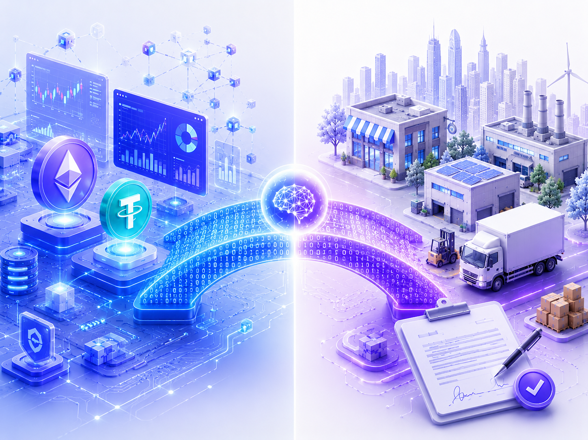
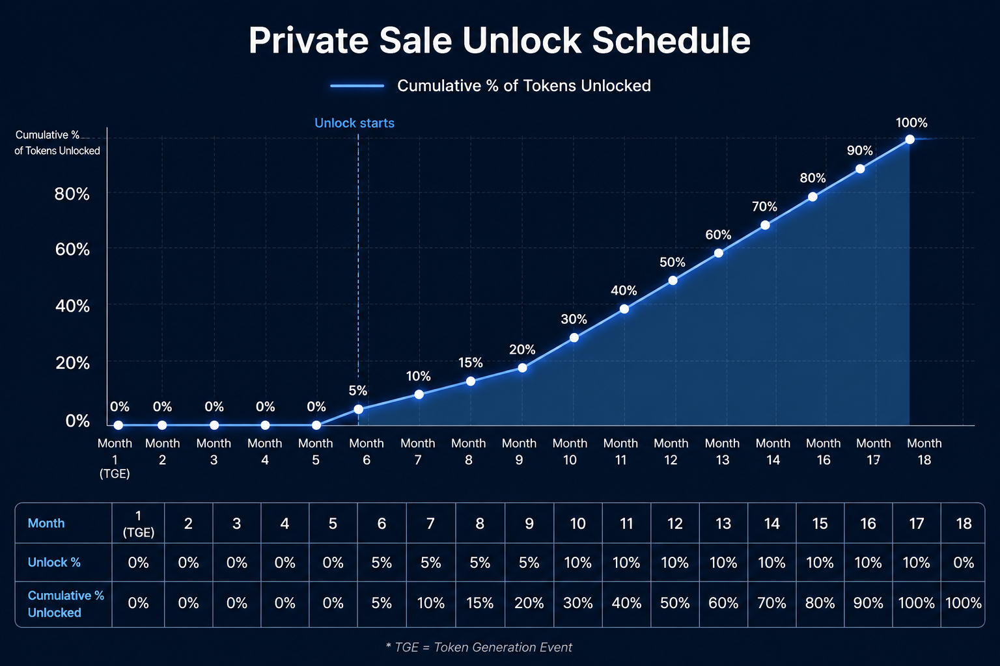
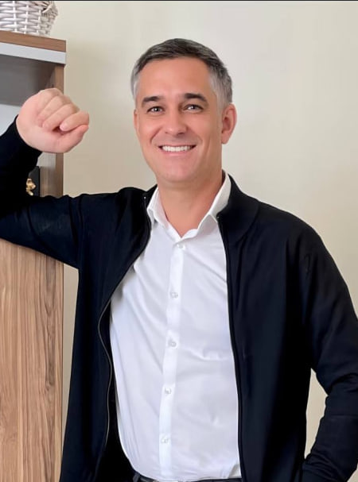
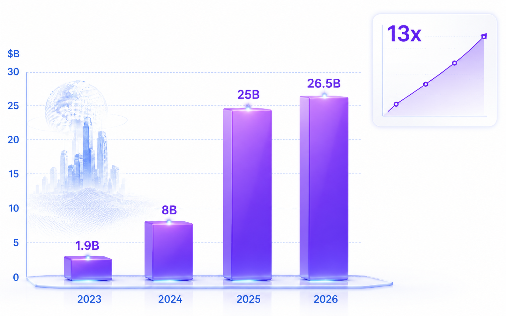
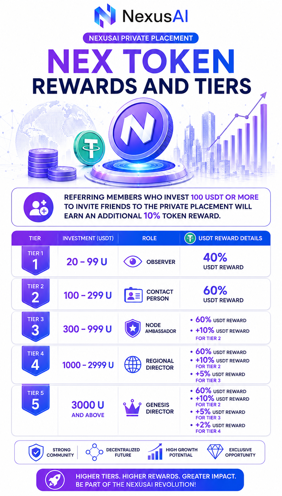
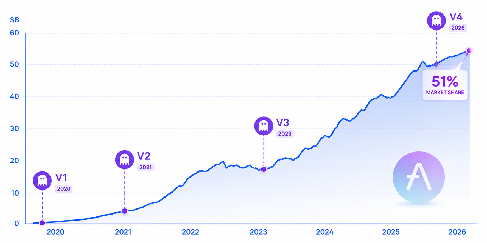

NexusAI AI + RWA
Start Your Journey with 20U
Hard to get traditional offline loans? On-chain DeFi too complex? NexusAI uses AI to bridge: 70% on-chain intelligent allocation + 30% real-world loans, earning 8%-15% annual yield.
Soft Cap
Hard Cap
Private Price
Minimum Entry
🌍 What Problem Are We Solving?
Structural Mismatch
Hundreds of billions of dollars in DeFi circulate internally, deposit rates drop below 2%; trillions of dollars in offline SME financing demand willing to pay 8%-15% interest, but cannot access.
Over-collateralization Barrier
Traditional DeFi requires 150%+ collateral ratio, excluding 99% of real borrowers. NexusAI's AI credit engine breaks the limit.

⚙️ NexusAI Three Core Technologies
AI Credit Engine
Graph neural network on-chain behavior analysis + zero-knowledge proof off-chain credit bridging, dynamic credit scoring, enabling partial uncollateralized lending.
Hybrid Asset Model
70% on-chain AI optimized interest rate allocation + 30% compliant RWA bridging (SME loans/supply chain finance), earning 8%-15% spread.
Dual-Trigger Unlock Mechanism
TVL reaches $30M or 6 months (whichever comes first) → then 12-month linear release, aligning interests with long-term growth.
📊 Tokenomics
| Parameter | Value |
|---|---|
| NEX Private Price | $0.10 / NEX |
| Soft Cap Target | $30M (3B NEX) |
| Hard Cap Target | $100M (10B NEX) |
| Total Supply | 30B NEX (to be determined after fundraising) |
🔓 Dual-Trigger Linear Release Mechanism
Traditional time-based unlocking often leads to "dump at launch". NexusAI ties unlocking to TVL growth: TVL reaches $30M or 6 months after TGE (whichever comes first), then linear release over 12 months. Team and early investors are fully aligned.

Unlock Curve Comparison (Standard vs Dual-Trigger)👥 Core Team
Tarun Chitra
Project Lead, former quantitative researcher at Pantera Capital, core contributor to Compound, expert in blockchain simulation and risk modeling.
David Park
CTO, former senior engineer at Meta Novi Wallet, core developer of Solana lending protocol, designed liquidation bot reducing bad debt by 90%.

Elena Vasiliev
COO, former institutional DeFi gateway designer at J.P. Morgan Onyx, Binance Europe business director, led listing of 20+ RWA projects.
📈 Why is RWA+AI a Deterministic Super Narrative?
What is RWA?
RWA (Real-World Asset tokenization) brings off-chain assets such as real estate, bonds, and receivables on-chain, unlocking a potential market of $30 trillion. J.P. Morgan Kinexys, BlackRock BUIDL fund ($2.9B) have fully deployed. Hong Kong released Digital Asset Declaration 2.0, making RWA a key direction.

DeFi Economic Landscape & Four Major Drawbacks of Lending Market
- ❌ Institutional capital accounts for only 11.5% of DeFi TVL, a huge gap
- ❌ Liquidity congestion: Over 60% of Aave deposits sit idle, deposit rates drop below 2%
- ❌ High liquidation risk, borrowers suffer heavy losses
- ❌ RWA double-edged sword: lack of transparent credit assessment
NexusAI's AI credit engine + hybrid asset model precisely solves the above pain points, paving the way for institutional entry.
Wall Street Enters En Masse + AI Credit Revolution
BlackRock, J.P. Morgan, Goldman Sachs, Franklin Templeton have all launched tokenized products. Creditlink AI credit score raised over $60M in 4 hours. Chainlink launched AI agent reputation system. NexusAI positions at the best intersection of AI+RWA.
👑 Private Sale Details · Titles & Privileges
| Investment (USDT) | Title | Direct Referral USDT | Indirect Referral Reward USDT | Direct Referral NEX |
|---|---|---|---|---|
| 20–99 | 🕵️ Observer | 40% | — | 0% |
| 100–299 | 🔗 Liaison | 60% | — | 10% |
| 300–999 | 🌐 Node Ambassador | 60% | Level 2: 10% | 10% |
| 1000–2999 | 🏛 Regional Councilor | 60% | L2 10% + L3 5% | 10% |
| 3000+ | 👑 Genesis Councilor | 60% | L2 10% + L3 5% + L4 2% | 10% |
🎁 Bonus Benefit: Members with 100U or more get 10% token reward of NEX obtained by direct referrals (stacked with USDT).

🤝 NexusAI Pioneer Ambassador Program
Build and share, more work more gain. We set up five levels of titles, rewards matching contributions, preventing infinite layers, token rewards aligned with TVL growth.
What exhibitions have we done for the Ambassador Program?
We participated in the 2026 Crypto Summits in New York and Singapore, and are also actively promoting offline charitable activities in the United States. In addition, each staff member has had in-depth exchanges with many well-known crypto leaders such as Richard Teng.
📋 How to Join Private Sale? Four Steps
1. Register Account
Click the link, register on official website
2. Get Internal Wallet Address
BEP20/TRC private sale exclusive address
3. Transfer USDT
Minimum 20U, keep TxID
4. Enter Swap Amount
After successful swap, invite friends to earn commissions
🤝 Strategic Partners & Ecosystem
🔥 Special Milestone: Binance DEX Beta
In October 2026, NEX token will be listed on Binance decentralized exchange internal test. All members can search for the token and verify locked credentials via Binance Web3 wallet. This is a key step for early transparency.
📰 Latest Industry News
Major Crypto Exchanges To Accept BlackRock’s $2.9 Billion Tokenized Money Market Fund As Collateral
Crypto.com and Deribit will now let savvy traders post Treasury securities-backed BUIDL tokens alongside bitcoin and stablecoins.
The $30B RWA boom has arrived, but the real challenge is just beginning!
Tokenized Real-World Assets (RWAs) are expanding into bonds, treasuries and other traditional assets being brought on-chain. Tokenised RWAs hit $30B!
S&P500, stock basis trades now viable on Hyperliquid DeFi blockchain with Ondo
Ondo Global Markets is making its tokenized stocks available on Hyperliquid, enabling basis trades between tokenized stocks and perpetual futures.
📅 Roadmap & Key Milestones
- 🔹 2026.05 – 2026.10 Private Sale Period (Soft Cap $30M / Hard Cap $100M)
- 🔹 2026.10 NEX Token Listed on Binance DEX Beta
- 🔹 2026.12 TGE + DEX Official Trading
- 🔹 Trigger Condition: TVL reaches $30M or 6 months after TGE (whichever comes first) → 12-month linear unlock
- 🔹 2027.Q1 Full-Feature Lending Mainnet + AI Credit Engine Operational
- 🔹 2027.Q2–Q3 First Yield Distribution
Aave's Success History & NEX Potential Forecast
Aave evolved from ETHLend to V4, TVL over $54B, market share over 51%. Similar RWA lending protocol Maple gave early private sale participants 5x returns. NexusAI is expected to achieve 5-20x returns within 12-24 months after TGE (based on market analogy, not a promise).

Q1: How is the security of offline assets guaranteed?
We partner with licensed institutional custodians, and all offline assets are held by regulated third-party custodians. The asset value is regularly verified by compliant auditing firms and mapped onto the blockchain in tokenized form. Loan agreements and collateral documents are locked off-chain within a legal framework, essentially the same as traditional bank credit asset securitization (ABS), but with the added advantage of blockchain's transparency.Q2: How is AI risk control better than traditional risk control?
Traditional risk control relies on manual review and historical data, which is slow and costly. NexusAI's AI risk control engine can analyze tens of thousands of on-chain transaction records in real time, using graph neural networks to identify hidden risk correlations—such as whether there are fraudulent wash trades between address A and address B, or whether a certain address frequently interacts with high-risk contracts. These signals are things that human auditors could never discover in massive amounts of data.Q3: Why soft cap $30M / hard cap $100M?
$30 million is our "minimum economic scale" for launching our offline asset bridging business. Below this amount, we cannot establish effective partnerships with institutional borrowers—they need sufficient capital to cover their loan needs. $100 million is our capacity ceiling for the first phase; beyond this amount, our risk control model and offline asset verification capabilities will not be able to guarantee the same rate of return and security.Q4: When can I sell my tokens?
NEX tokens were listed on decentralized exchanges (DEXs) immediately after fundraising, but only a small number of tokens were in circulation initially. A large portion of the tokens (including shares held by early investors) will be released linearly after six months or once the total value of tokens (TVL) reaches $30 million. This design protects all participants—no one can dump tokens in large quantities early in the project, giving the token price a more solid foundation.Q5: Why can't I trade now?
Tokens issued during the private sale phase are early-stage, non-circulating assets locked by a smart contract. According to our dual-trigger unlocking mechanism, tokens will only begin to be released linearly after the TVL reaches $30 million or after 6 months. This is to prevent immediate sell-offs upon launch and protect the long-term interests of all early investors. All mainstream compliant DeFi projects (such as Aave and Maple) have similar locking arrangements in their early stages.Q6: What if NEX depreciates?
All cryptocurrencies carry the risk of going to zero, including NEX. However, we operate a project with real revenue – each token is backed by offline loan interest. As long as the offline lending business continues to generate an annualized return of 8%-15%, the protocol has the capacity to buy back tokens. In the event of extreme market panic, we will activate an emergency stabilization fund (drawing 10% from the protocol's revenue) to provide a safety net. But please understand: there is no investment with 100% principal protection.Q7: Why are referral rewards as high as 60%?
The 60% direct referral bonus isn't just "printing money out of thin air." Instead, it's a direct allocation of the budget that would normally go to centralized advertising platforms, KOLs, and exchange listing fees to community members. Traditional internet projects typically cost $30-50 per person to acquire a customer; we return this money to users as referral rewards. 60% may seem high, but you only receive a reward when your friends actually invest—it's a performance-based market model.Q8: Is this a ponzi scheme?
The characteristics of a Ponzi scheme are: no real source of income, and the principal of later investors is used to pay interest to earlier investors. NexusAI has real offline lending assets—every loan has a loan agreement, collateral, and repayment source. The interest we pay to investors comes from the 8%-15% annualized interest rate paid by the borrowers, not from the investment funds of new users. You can view our regularly published asset reserve certificates and third-party audit reports.Q9: Why can't I find project information?
Because we are still in the private placement stage, we haven't launched a large-scale media campaign yet. This is intentional—premature exposure would attract speculators and competitors, affecting the stability of the private placement price. We plan to focus our global media campaign, Cointelegraph coverage, and KOL collaborations in Q4 2026 (around TGE). Currently, information is mainly released on our official Telegram and Twitter accounts.Q10: Can I withdraw my investment early?
Once the private placement is complete, USDT will be immediately converted into NEX tokens in the smart contract and locked. Early exit or redemption is not possible until the unlocking trigger conditions (TVL reaching $30 million or 6 months) are met. This is standard practice for all early-stage DeFi projects. If you require readily available liquidity, it is recommended to wait until the token is listed on the DEX before purchasing from the secondary market.Q11: Can I get my tokens earlier?
No. Token release is executed automatically by a smart contract, and no one (including the team) can unlock them in advance. The contract code will be open source and subject to third-party auditing, which you can verify yourself. This is done for fairness—if the team could unlock tokens early for some people, it would be fraud against other investors.Q12: What if the team runs away?
The smart contract's lock-up logic is open source, and multi-signature wallets require 3 out of 5 signatures (including a community representative); the legal costs and reputational damage from a scam far outweigh the potential gains. Of course, if you still don't trust it, you can wait until the project launches and the community matures before participating.Q13: Is there a signed contract?
We do not provide traditional paper contracts because the trust foundation of DeFi is smart contract code. When you transfer USDT to the private placement address, the on-chain transaction record is your "contract." All terms (token quantity, lock-up rules, release time) are written in the smart contract, which is publicly verifiable and tamper-proof. If you require a legally binding investment agreement, we can provide an electronic subscription agreement, but please note that the cross-border legal effect of cryptocurrencies is limited.Q14: Is there an individual investment limit?
There is no hard cap for individuals, but the entire private placement has a soft cap of $30 million and a hard cap of $100 million. The private placement will close early once the total amount raised reaches the hard cap. For investments exceeding $500,000 from a single address, we will conduct additional Anti-Money Laundering (AML) audits to ensure the legality of the funds' origin.Q15: Are there special benefits for investing over 3000U?
Our pricing system is already standardized at $0.1 per NEX, with no additional discounts. However, Founding Directors with over 3000 USDT enjoy the highest level of referral rewards (four levels of indirect referrals) and community honors (exclusive NFTs, DAO governance weight, and direct communication with the team). These intangible values far exceed the price discount of a few dollars.Why Does NEX Have Huge Potential?
RWA Pilot and Yield Product Launch
Collaboration as AlphaPepe Turns Meme Culture Into AI DeFi
Work in $13 Trillion Repo Market
Flash Loan Volume – Is $300 Breakout Imminent?
Private placement tokens cannot be traded immediately; please treat this matter rationally.
AI Credit Engine
×
Core Technology Details
1. Graph Neural Network (GNN) for On‑Chain Transaction Graph Analysis: The protocol employs Graph Convolutional Networks (GCN) or Graph Attention Networks (GAT) to model transaction graphs across Ethereum, BSC, and other major chains. It extracts subgraph structures, temporal flows, and fund path features. Combined with AML rules and unsupervised clustering, it identifies hidden risks such as mixers, dark‑net associations, and phishing addresses. Based on same‑frequency transactions and fund‑return patterns, it infers the strength of credit relationships between addresses, laying the foundation for on‑chain credit profiling.
2. Zero‑Knowledge Proof (ZKP) for Off‑Chain Credit Records: Through ZK‑SNARKs or ZK‑STARKs, sensitive off‑chain information such as bank statements, tax data, and supply chain documents are transformed into verifiable credentials in a privacy‑preserving manner. The protocol only receives the proof, not the raw data, enabling on‑chain credit assessment while ensuring compliance. This mechanism can be combined with Decentralized Identity (DID) to form a composable off‑chain credit oracle.
3. Dynamic Credit Scoring and Flexible Collateral Ratios: Based on on‑chain behavior (transaction history, liquidation risk) and off‑chain privacy credit data, the system uses LightGBM or federated learning models to output a real‑time credit score between 0 and 1000. The collateral ratio is dynamically set according to the score – high‑quality borrowers can enjoy 0% collateral (pure credit), or 10%‑50% low collateral, or even uncollateralized credit lending for specific whitelisted addresses. This model significantly lowers the capital barrier for DeFi, allowing real SME financing needs (such as inventory turnover, invoice discounting) to access on‑chain liquidity, and can hedge bad debt risks through Credit Default Swaps (CDS) or risk‑sharing pools.
Hybrid Asset Model
×
Operation Mechanism & Profit Source
1. On‑chain AI Optimized Allocation (70% of funds): 70% of the raised funds are dynamically allocated by an AI yield optimizer to the highest‑yield lending pools in mainstream money markets such as Aave, Compound, and Euler. The AI algorithm considers real‑time deposit APY, pool utilization, historical volatility, protocol security scores (e.g., DeFi Safety index), and can perform arbitrage‑free rebalancing based on cross‑chain bridge fees and gas costs, pursuing the optimal risk‑adjusted base return (RAR).
2. Off‑chain RWA Compliance Channel (30% of funds): The remaining 30% of funds go through a dedicated SPV (Special Purpose Vehicle) to complete KYC/AML and legal compliance processes, entering the tokenized real‑world asset (RWA) market, including SME secured loans, supply chain finance factoring, and accounts receivable notes. RWAs are mapped to ERC‑20 / ERC‑3643 (compliant tokens) through compliant oracles or asset tokenization protocols (such as Centrifuge, Goldfinch), enabling on‑chain tracking of repayment flows and collateral status.
3. Spread and Value Capture: Off‑chain borrowers pay an annual interest rate of 8%‑15%, from which the protocol retains 2%‑7% as net spread income. Part of this income is used to buy back platform tokens NEX from the secondary market, forming a “real yield → buyback → token deflation / staking rewards” loop. The remaining income flows into the protocol treasury, used for reserve funds, insurance pools, or governance incentives. This model combines the high liquidity of DeFi with the high interest rate premium of traditional credit, building a sustainable on‑chain + off‑chain dual income source.
Dual-Trigger Unlock Mechanism
×
Innovative Design to Protect Investors' Interests
Pain Points of Traditional Unlocking: Most projects use pure time-based unlocking (e.g., unlocking every quarter after TGE), resulting in the team and investors holding a large number of low-cost linearly released tokens in the early stages of launch. This often creates continuous selling pressure before the product matures, causing price discovery distortion and damage to community confidence.
NexusAI's Dual Trigger Conditions: Token unlocking does not rely on a single timeframe, but rather uses two trigger conditions: (1) TVL reaching $30 million (a business scaling metric) and (2) 6 months after TGE (a bottom‑line protection metric). The first of these two conditions to be met initiates the unlocking window. Once the unlocking window opens, tokens are released linearly over 12 months (evenly distributed daily or weekly), rather than in a one‑time unlock. This mechanism ensures that token release is strongly tied to actual adoption of the protocol (growth in total locked value), forcing the team to drive business growth before unlocking, rather than waiting for time to pass.
Alignment of Interests and Price Support: The dual‑trigger unlocking mechanism aligns the team, early investors, and community on the same growth curve, preventing a flood of tokens into the market during periods of low TVL. Combined with subsequent buybacks and a treasury mechanism, this provides solid fundamental support for the NEX token, mitigating the risk of an immediate price drop or a sustained decline. This model can be further integrated with veToken governance or tiered staking to create a more stable token economy.
Major Crypto Exchanges To Accept BlackRock’s $2.9 Billion Tokenized Money Market Fund As Collateral
×
Crypto.com and Deribit will now let savvy traders post Treasury securities-backed BUIDL tokens alongside bitcoin and stablecoins. For years, crypto traders posting collateral on exchanges have faced a tough tradeoff: use stablecoins like USDC or tether, which are stable but pay no yield, or roll the dice with volatile assets like bitcoin and ether, risking a double hit when markets turn south: losses on your trade and on the collateral backing it. This new development marks a major step for RWA integration into mainstream crypto infrastructure.
The $30B RWA boom has arrived, but the real challenge is just beginning!
×
Tokenized Real-World Assets (RWAs) are expanding into bonds, treasuries and other traditional assets being brought on-chain. Tokenised RWAs have crossed the $30 billion-mark, with the market very quickly expanding since 2025. This category was once mainly associated with stablecoins. Today, it’s spreading across treasuries, private credit, commodities, equities, funds, and other yield-bearing assets. The real challenge now is ensuring liquidity, pricing transparency, and seamless DeFi composability.
S&P500, stock basis trades now viable on Hyperliquid DeFi blockchain with Ondo
×
Ondo Global Markets is making its tokenized stocks available on Hyperliquid, the blockchain known for enabling 24/7 DeFi trading of perpetual futures linked to real world assets (RWAs), including oil. With both the tokenized stocks and the perpetual futures available on the same chain, traders can arbitrage the price difference between the two, a strategy known as a basis trade, which additionally helps keep Ondo GM's tokenized stocks anchored to the underlying stock prices.